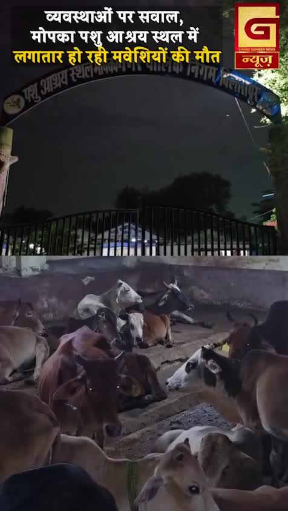
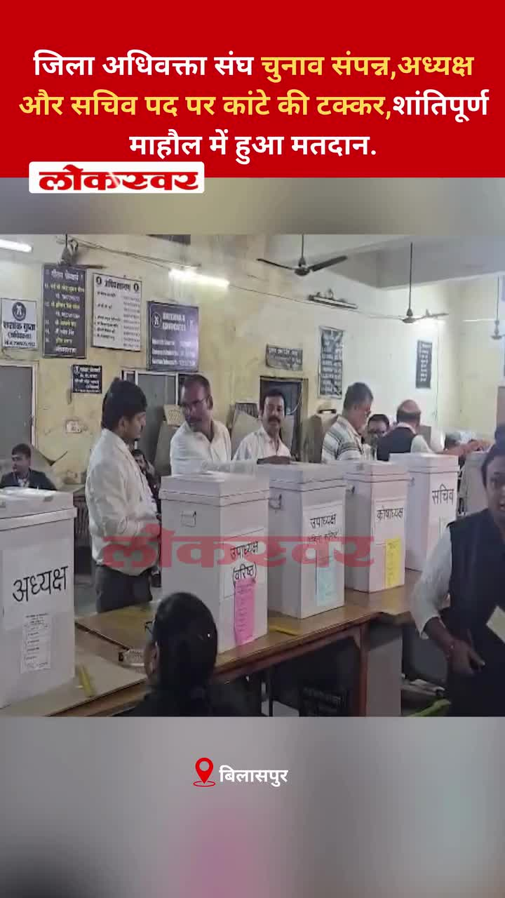
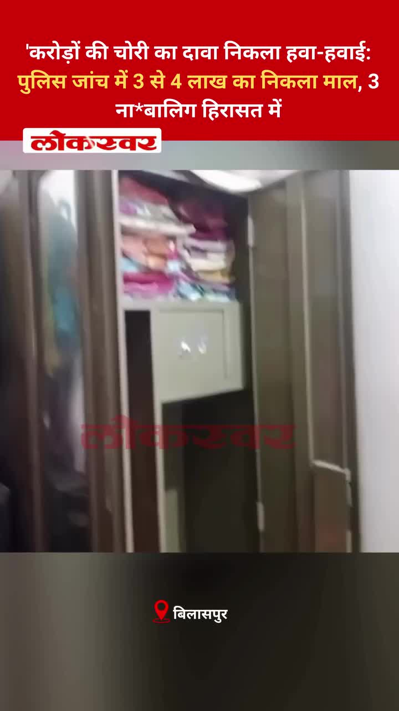
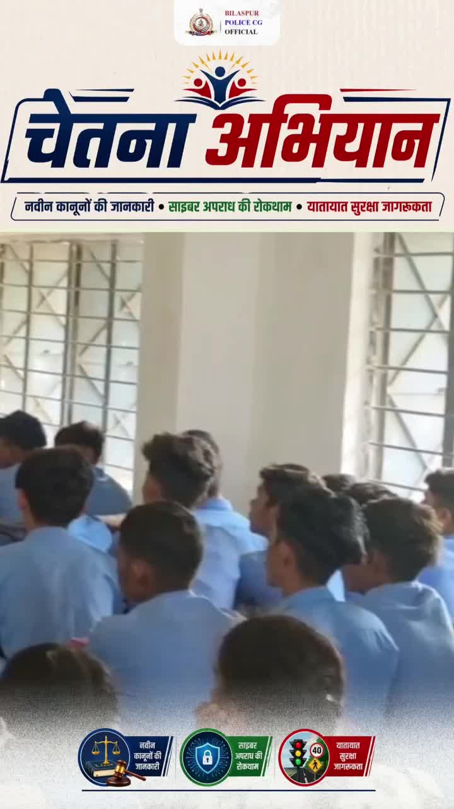
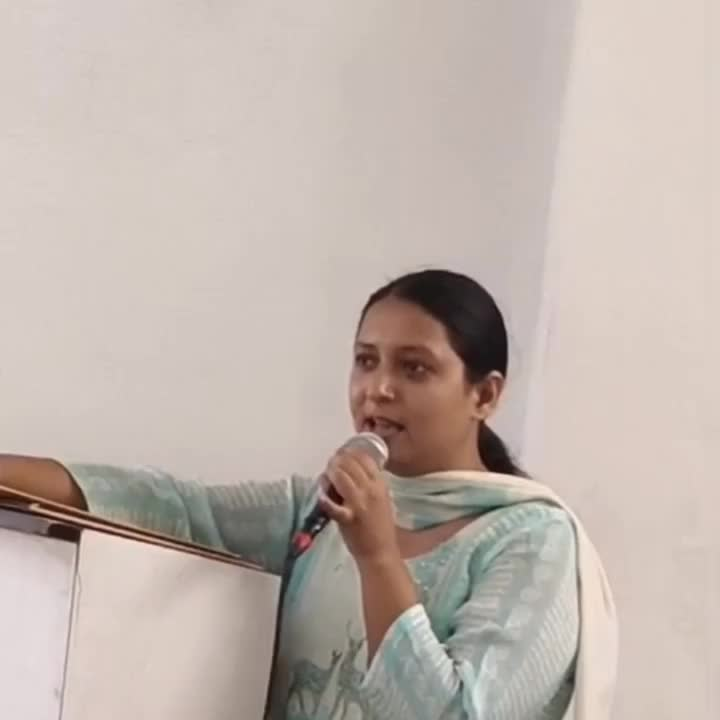

Bilaspur News Hub
1
EDUCATION
6
EVENT
10
GOVERNMENT
1
HEALTH
4
INFRASTRUCTURE
31
INSTAGRAM NEWS
3
NEWS
15
POLICE
2
SOCIAL
14
YOUTUBE VIDEOS
EDUCATION1

CG Wall · Published: Sat, 25 Ju | Scraped: 2026-07-25 16:45:18
Officials from the education department visited a primary school in Rani village, providing meals and snacks to students. The initiative aims to support children's nutrition and encourage school attendance.
EVENT6

CG Wall · Published: Sat, 25 Ju | Scraped: 2026-07-25 16:45:18
An angel was awarded an international crown, earning Bilaspur a prestigious global recognition. This honor highlights the city's growing cultural stature and pride.

The Hitavada · Scraped: 2026-07-26 05:25:46
Defence Minister Rajnath Singh arrived in Srinagar to attend the 27th Kargil Vijay Diwas celebrations in Ladakh. The event commemorates the historic victory and honors the bravery of Indian forces.
The Hitavada · Scraped: 2026-07-26 05:25:46
The Late Dhabe slum soccer tournament begins on August 1, featuring local teams. The event aims to promote community sports and youth engagement. Residents are excited for the competitive matches.

The Hitavada · Scraped: 2026-07-26 05:25:46
Ibrahim, Fuzail, and Jamal powered Rabbani to victory with strong performances. Their batting helped secure the title in a thrilling finish. The win celebrates team collaboration and skill.

G News Bilaspur · Published: 2026-07-25 | Scraped: 2026-07-25 16:45:18
The PRIME 25 JUL event is scheduled for July 25, marking a significant occasion in Bilaspur.

G News Bilaspur · Published: 2026-07-25 | Scraped: 2026-07-25 16:45:18
A 42-year-old woman from Bilaspur claimed the prestigious Mrs. India title at the pageant held in Delhi's Hotel Leela International. Her victory highlights the growing representation of older contestants in beauty pageants.
GOVERNMENT10

Lokswar · Published: Sun, 26 Ju | Scraped: 2026-07-26 08:12:13
Raids were conducted by the Enforcement Directorate and Income Tax Department at a businessman's residence in Baloda Bazar. Authorities are examining seized documents to uncover possible financial irregularities.

Nai Dunia Bilaspur · Published: Sun, 26 Ju | Scraped: 2026-07-26 12:58:00
Large-scale Vyapam and PSC examinations were conducted across 82 centers in Bilaspur today. Police were deployed outside each center and route diversions were implemented to ensure smooth traffic flow. The exams proceeded without major incidents.

Lokswar · Published: Sun, 26 Ju | Scraped: 2026-07-26 12:58:00
A Chhattisgarh High Court judge, who holds the portfolio for Raigarh, visited the district courts and jail today. He conducted an annual inspection of the judicial facilities. The visit aimed to assess the functioning and security arrangements.

Lokswar · Published: Sat, 25 Ju | Scraped: 2026-07-25 13:02:05
The District Advocates Association election concluded with a close contest for president and secretary, conducted peacefully. Voting was orderly and no incidents were reported.
The Hitavada · Scraped: 2026-07-26 05:25:46
Ravi Joshi has been appointed as the new Education Minister, taking charge of the state's education portfolio. The announcement was made by the state government amid expectations of reforms in the sector.
The Hitavada · Scraped: 2026-07-26 05:25:46
Senior BJP leader Dharmendra Pradhan has resigned from his position, prompting the CJP to call off its ongoing agitation. The development signals a shift in the state's political dynamics.

The Hitavada · Scraped: 2026-07-26 05:25:46
The Nagpur Tiger Declaration 2026 will frame the state's tiger conservation policy. It aims to boost tiger habitats and anti-poaching measures. The initiative marks a major step for wildlife protection.
The Hitavada · Scraped: 2026-07-26 05:25:46
Former minister Singh is contesting two posts simultaneously, aiming for dual victory in upcoming elections. His campaign focuses on development and anti‑corruption promises.
Nagar Nigam Bilaspur · Published: 2026-07-25 | Scraped: 2026-07-25 20:42:01
The Bilaspur Municipal Corporation website experienced an internal execution error (yii\db\Command::internalExecute), disrupting online services temporarily. Officials are working to resolve the issue and restore normal functionality.
Nagar Nigam Bilaspur · Published: 2026-07-25 | Scraped: 2026-07-25 20:42:01
Another internal error occurred in the Nagar Nigam portal, this time involving yii\base\Module::runAction, affecting citizen access. Technical teams are addressing the problem to resume services promptly.
HEALTH1

G News Bilaspur · Published: 2026-07-25 | Scraped: 2026-07-25 16:45:18
Kota faces a renewed malaria outbreak with four children from Aropani-Nawadih testing positive. All patients have been referred to SIMS for treatment and further management.
INFRASTRUCTURE4

Nai Dunia Bilaspur · Published: Sun, 26 Ju | Scraped: 2026-07-26 11:26:15
Bilaspur unveiled a novel selfie spot on its flyover, featuring a water walkway for visitors to stroll and capture photos. The attraction adds a fresh recreational option for locals and tourists alike.

The Hitavada · Scraped: 2026-07-26 05:25:46
A recent traffic experiment at Agrasen Square has sparked debate after the temporary pedestal was reinstalled. Authorities are reviewing the trial's effectiveness amid public concerns over congestion.

The Hitavada · Scraped: 2026-07-26 05:25:46
Despite state approvals, the broad gauge metro project remains on paper with no progress. Officials cite funding and coordination issues as hurdles. Commuters continue to rely on existing transport.

G News Bilaspur · Published: 2026-07-25 | Scraped: 2026-07-25 16:45:18
The Food Operator conducted a quality inspection of the ongoing Grain ATM Annapurna project in Bilaspur. The visit ensures compliance with standards and timely completion of the facility.
INSTAGRAM NEWS31

The municipal animal shelter in Mopka, Bilaspur, suffers severe mismanagement, leading to continuous cattle deaths. Authorities have been urged to improve care, staffing, and facilities to prevent further losses.
Namhol Primary Health Centre faces a critical shortage of doctors, affecting patient care. The health minister intervened and assured swift action to fill vacancies and enhance services.

Shimla police conducted a major anti‑drug operation, confiscating 8 kilograms of charas. The main accused was arrested and presented before court, highlighting the crackdown on trafficking.

जिला अधिवक्ता संघ चुनाव संपन्न,अध्यक्ष और सचिव पद पर कांटे की टक्कर,शांतिपूर्ण माहौल में हुआ मतदान. #BilaspurNews #DistrictBarAssociation #AdvocateElection #BilaspurLawyers #ChhattisgarhNews #BarAssociationElection #BilaspurCourt #LawyersLife #ElectionUpdates #ProudLawyers #LegalCommunity #BilaspurDiaries #CGOfficial by @lokswar.in

'करोड़ों की चोरी का दावा निकला हवा-हवाई: पुलिस जांच में 3 से 4 लाख का निकला माल, 3 नाबालिग हिरासत में#BilaspurPolice #BilaspurNews #ChhattisgarhNews #CrimeNews #PoliceAction #BilaspurDiaries #CGOfficial #BigKhulasa #TheftCase #PoliceInvestigation #BilaspurCrime #LawAndOrder by @lokswar.in
बताओ फिर कब चलना है यहाँ ? taken in Korba, Chhattīsgarh, India by @bilaspurdiaries
बिलासपुर पुलिस की सशक्त बीट प्रणाली हेतु एसएसपी रजनेश सिंह ने 48 मोटर साइकिलों को दिखाई हरी झंडी 🏳️ प्रभावी पुलिसिंग की दिशा में बड़ा कदम, अपराध नियंत्रण को मिलेगी नई गति... by @bilaspurdist
The state advisor, Smt Monica Singh, visited Chitawar Gram Panchayat in Takhtpur to assess development projects and interact with villagers. She emphasized rural infrastructure improvements and encouraged community participation.

Bilaspur Police organized a Chetna Abhiyan awareness program at Bhatchoura Higher Secondary School, focusing on road safety and cybercrime prevention. Students participated actively in the interactive sessions.
नई आभूषण दुकान 'बुद्धा मल एंड संस' ने आयमा में यामिनी होटल के पास अपना संचालन शुरू किया है, जो स्थानीय ग्राहकों को गुणवत्तापूर्ण आभूषण प्रदान करेगी। यह क्षेत्र में व्यापारिक गतिविधियों को बढ़ावा देगा।

यह पोस्ट बिलासपुर टुडे न्यूज़ के आधिकारिक इंस्टाग्राम हैंडल से है, जो नियमित अपडेट और स्थानीय समाचार साझा करता है। यह समुदाय के साथ जुड़ाव और जानकारी साझा करने पर केंद्रित है।
बिलासपुर पुलिस ने 12 ग्राम चिट्टे के साथ एक युवक को गिरफ्तार किया और एनडीपीएस अधिनियम की धारा 21 के तहत मामला दर्ज किया। जाँच जारी है और ड्रग्स के खिलाफ सख्त कार्रवाई की जा रही है।
एक छात्र ने NEET 2026 में सफलता हासिल करने के बाद अपनी खुशी व्यक्त की और 'ड्रीम. बिलीव. अचीव' के संदेश के साथ अन्य छात्रों को प्रेरित किया। यह उपलब्धि कड़ी मेहनत और दृढ़ संकल्प का परिणाम है।

Jay Lahre, a constable posted at Hasoud police station, was found dead by hanging inside the station building. Police are investigating the circumstances surrounding his death.
नीट यूजी पेपर लीक विवाद के बीच केंद्रीय शिक्षा मंत्री धर्मेंद्र प्रधान के इस्तीफे के बाद प्रहलाद जोशी को शिक्षा मंत्रालय की जिम्मेदारी सौंपी गई है। छात्र आंदोलनों और परीक्षा में कथित गड़बड़ियों के बीच हुए इस बदलाव के बाद अब शिक्षा व्यवस्था में सुधार की उम्मीदें बढ़ गई हैं। प्रहलाद जोशी कर्नाटक के धरवाड़ से कई बार सांसद रह चुके हैं और केंद्र में कई अहम मंत्रालयों की जिम्मेदारी संभाल चुके हैं।
#NEETUG #NEETPaperLeak #EducationMinister #DharmendraPradhan #PrahladJoshi #EducationMinistry #BreakingNews #StudentProtest #ExamReforms #IndiaNews #HindiNews #LatestNews #EducationNews #BJP #NewsUpdate by @g_news_bilaspur
13.39 ग्राम चिट्टा बरामदगी मामले में बड़ी सफलता: बैकवर्ड इन्वेस्टिगेशन में मुख्य सप्लायर पंजाब से गिरफ्तार
जिला बिलासपुर पुलिस द्वारा नशा तस्करी के विरुद्ध चलाए जा रहे व्यापक अभियान के तहत थाना कोट कहलूर पुलिस ने एक महत्वपूर्ण सफलता हासिल की है। 13.39 ग्राम चिट्टा/हेरोइन बरामदगी मामले की गहन बैकवर्ड इन्वेस्टिगेशन, डिजिटल एवं इलेक्ट्रॉनिक साक्ष्यों के विश्लेषण तथा मनी ट्रेल की जांच के आधार पर नशे की खेप के मुख्य सप्लायर को होशियारपुर (पंजाब) से गिरफ्तार किया गया है।
बिलासपुर पुलिस का लक्ष्य केवल नशीले पदार्थों की बरामदगी तक सीमित नहीं है, बल्कि नशा तस्करी के पूरे नेटवर्क को चिन्हित कर उसे जड़ से समाप्त करना है। प्रत्येक मामले में बैकवर्ड एवं फॉरवर्ड लिंक की गहन जांच कर मुख्य सप्लायरों और नेटवर्क संचालकों तक पहुंचकर उनके विरुद्ध कठोर कानूनी कार्रवाई सुनिश्चित की जा रही है।
*नशे के विरुद्ध हमारी लड़ाई लगातार जारी है। आइए, नशा मुक्त � by @bilaspur_today_news
चकरभाठा बस्ती क्रिकेट मैदान में नवयुवकों को साइबर सुरक्षा एवं साइबर अपराध, चेतना विरुद्ध नशा, यातायात के नियमों के पालन करने के संबंध में जागरूक किया गया। by @bilaspurdist
NEWS3

Nai Dunia Bilaspur · Published: Sun, 26 Ju | Scraped: 2026-07-26 08:12:13
During the Kargil war, two lesser-known soldiers excelled under extreme cold. One maintained artillery readiness while the other ensured vital supplies reached the front at -20°C, contributing to victory.

Lokswar · Published: Sun, 26 Ju | Scraped: 2026-07-26 08:12:13
The IMD has issued a red alert for heavy rainfall across Chhattisgarh due to a strong low-pressure system over the Bay of Bengal. Residents are advised to stay cautious and avoid flood-prone areas.

Lokswar · Published: Sun, 26 Ju | Scraped: 2026-07-26 11:26:15
A bus on Ganga Expressway collided with a divider early Sunday, resulting in two deaths and over 25 injuries. Emergency teams rushed victims to hospitals while authorities launch a probe into the crash.
POLICE15

Nai Dunia Bilaspur · Published: Sun, 26 Ju | Scraped: 2026-07-26 05:25:46
Three scrap dealers broke into a builder's residence and stole items worth ₹5 crore. Police solved the case within three days, arresting the culprits and recovering most of the stolen goods.

Lokswar · Published: Sun, 26 Ju | Scraped: 2026-07-26 08:12:13
A new online scam targeted jewellers in Raipur by promising gold purchases. The fraudster stole around ₹2 lakh and has fled, prompting police investigation.

Lokswar · Published: Sun, 26 Ju | Scraped: 2026-07-26 08:12:13
A police constable, Jai Lahre, was found hanging in the barracks of Hasoud police station in Sakti district. The incident has shocked the local police community and prompted an inquiry.

Lokswar · Published: Sun, 26 Ju | Scraped: 2026-07-26 11:26:15
The new station house officer in Sirgitti swiftly launched raids on suspected criminals and enforced strict measures against public drunkenness. His proactive steps aim to strengthen law and order in the area.
Lokswar · Published: Sat, 25 Ju | Scraped: 2026-07-25 13:02:05
Police solved a major loot case within 48 hours, arresting four adult suspects and four minors in Devarhat village, Mungeli district. The swift operation highlights effective investigation.

Lokswar · Published: Sat, 25 Ju | Scraped: 2026-07-25 13:02:05
A reported multi‑crore theft turned out to be a hoax; police recovered goods worth only 3‑4 lakhs and placed three minors in custody. The investigation revealed the claim was false.

CG Wall · Published: Sat, 25 Ju | Scraped: 2026-07-25 16:45:18
Hiri police intercepted a suspect transporting illicit liquor concealed in a scooter's trunk during the ongoing anti-liquor drive. The seizure underscores law enforcement's efforts to curb illegal alcohol trade.

CG Wall · Published: Sat, 25 Ju | Scraped: 2026-07-25 16:45:18
Bilaspur police launched a new beat system deploying 48 motorcycles to enhance visibility and response, aiming to improve law and order and deter crime. The initiative reflects a shift toward proactive policing.

CG Wall · Published: Sat, 25 Ju | Scraped: 2026-07-25 18:49:14
A minor girl was lured with marriage promises and abducted by a man. Sitapuri police tracked and arrested the culprit, bringing him behind bars.
Lokswar · Published: Sat, 25 Ju | Scraped: 2026-07-25 18:49:14
The Bilaspur police launched 48 motorcycles to strengthen the beat system, enhancing crime control and law enforcement. Beat in-charge officials are now patrolling the streets for better community outreach.

CG Wall · Published: Sat, 25 Ju | Scraped: 2026-07-25 20:42:01
Sigitti police arrested six individuals involved in gambling and other offenses, sending a strong message about law enforcement. Bilaspur police are intensifying actions against those who disturb law and order in the city.
Lokswar · Published: Sat, 25 Ju | Scraped: 2026-07-25 20:42:01
Hirri police conducted an excise act raid, seizing 90 paos of illegal liquor and arresting the perpetrator. The operation underscores the district’s ongoing crackdown on illicit alcohol trade.
Lokswar · Published: Sat, 25 Ju | Scraped: 2026-07-25 20:42:01
Police uncovered a massive fraud where a mastermind duped victims by selling fake vehicles and land, swindling crores. The arrest follows an extensive investigation into the illegal dealings.
The Hitavada · Scraped: 2026-07-26 05:25:46
Investigators have arrested the mastermind and his aide in the Mah TET paper leak, bringing the total number of arrests to fourteen. The crackdown aims to curb widespread cheating in the examination.
The Hitavada · Scraped: 2026-07-26 05:25:46
A youth was tracked on Instagram for two months before being killed in a gang war, the murder captured on camera in full public view. Police are investigating the incident and suspect inter-gang rivalry.
SOCIAL2
Anurag Bajpai elected president of Bilaspur Advocates Association / बिलासपुर जिला अधिवक्ता संघ चुनाव में अनुराग बाजपेयी अध्यक्ष बने, 75% मतदान
Lokswar · Published: Sun, 26 Ju | Scraped: 2026-07-26 12:58:00
The Bilaspur District Advocates Association held elections with 75% voter turnout. Anurag Bajpai emerged victorious and was declared president. The results were announced after the polling concluded.

Jai Shri Ram resonates in Bilaspur, honoring 'Bhancha Shri Ram' / जय श्रीराम के जयघोष से बिलासपुर गूंजा, ‘भांचा श्रीराम’ के सम्मान में उमड़ा जनसैलाब
CG Wall · Published: Sat, 25 Ju | Scraped: 2026-07-25 16:45:18
After a theft at the Ayodhya Ram temple, Bilaspur saw a massive gathering where devotees chanted Jai Shri Ram and honored 'Bhancha Shri Ram' in a show of faith. The event highlighted strong religious sentiment and community solidarity.
YOUTUBE VIDEOS14


यह बिलासपुर का अंतिम समाचार बुलेटिन है, जो 26 जुलाई 2026 की सुबह की ताजा खबरों को प्रस्तुत करता है। इसमें क्षेत्रीय विकास, सुरक्षा और अन्य महत्वपूर्ण अपडेट शामिल हैं।
Classes have started across Bilaspur schools, yet many students still lack textbooks. Officials have promised rapid distribution to ensure learning is not disrupted.
Police in Bilaspur have arrested six individuals accused of creating disturbances in public areas. The arrests were made following complaints and investigations. Authorities aim to maintain peace and prevent further incidents.
The Vyapam conducted the assistant librarian and laboratory recruitment examination in Bilaspur today. The exam was completed smoothly with proper supervision. Results are expected soon for the candidates.
Police in Bilaspur solved a house burglary, identifying thieves and recovering stolen goods. The case showcases local police efficiency in tackling property crimes.
Symbolic pot breaking protest against BJP in Bilaspur / प्रतीकात्मक मटकी फोड़कर भाजपा पर साधा निशाना
Activists staged a symbolic pot‑breaking protest in Bilaspur to criticise BJP policies, using traditional imagery for political commentary. The demonstration attracted local media attention.
बिलासपुर से तीन दिवसीय श्रीराम श्रद्धा आस्था यात्रा शुरू


धर्मेंद्र प्रधान के इस्तीफे के बाद भी प्रदर्शन जारी, बिलासपुर में युवाओं ने रैली निकाल शिक्षा सुधार


The evening final news of 25 July 2026 from Bilaspur Grand News provides the latest updates and happenings of the day.


Youth across Bilaspur and the nation assert they will not tolerate any anti‑national conspiracies, signaling a strong resolve against divisive plots.


Cow shelter Moilka is suffering severe neglect, prompting anger among cow protectors who demand better care for the animals.


A three‑day Shri Ram faith journey concluded in Bilaspur, drawing large numbers of devotees and creating a vibrant religious atmosphere.


The outcome highlights either a student achievement or a systemic failure, raising questions about the effectiveness of the education system.